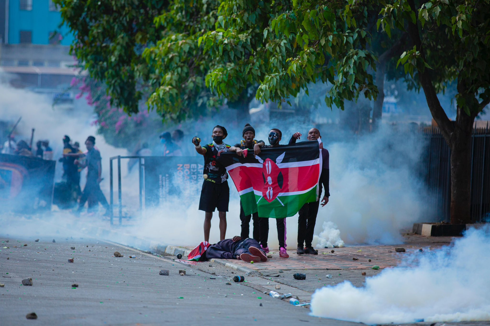
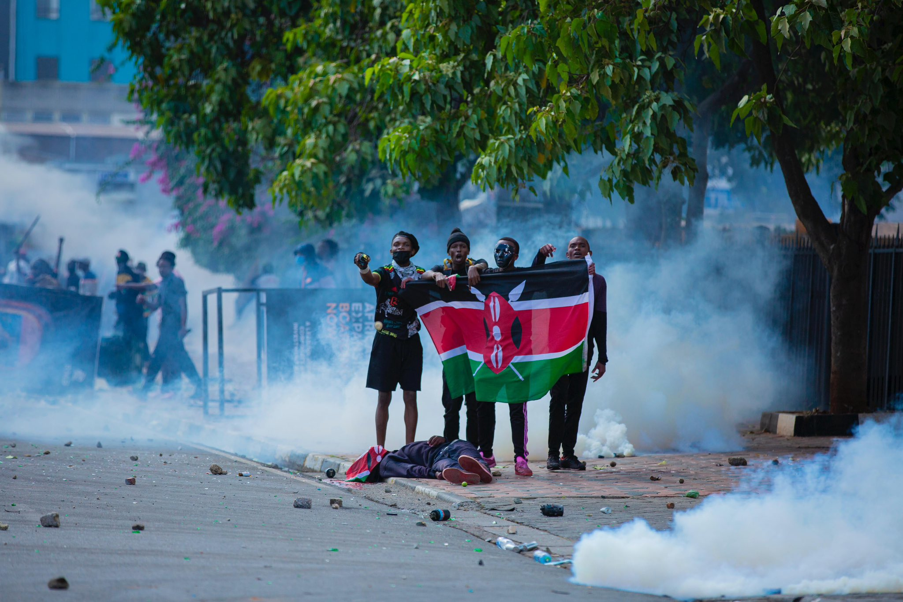

Welcome
This site documents the Kenya protests of 2024, honoring those who suffered and calling out those who enabled oppression. Since June 2024, at least 39 people have been killed, hundreds injured, and 82 abducted.
This site documents the Kenya protests of 2024, honoring those who suffered and calling out those who enabled oppression. Since June 2024, at least 39 people have been killed, hundreds injured, and 82 abducted.
